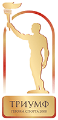

Одним из самых ярких, зрелищных и смелых проектов Президентского спортивного клуба является открытый публичный конкурс «Триумф. Героям спорта». Конкурс проводится совместно с Национальной государственной телерадиокомпанией Республики Беларусь, Министерством спорта и туризма Республики Беларусь и Национальным олимпийским комитетом Республики Беларусь в годы летних и зимних Олимпийских игр. В рамках проекта с учетом мнения белорусских любителей спорта определяются лучшие отечественные спортсмены и тренеры уходящего года. Кульминация проекта — торжественная церемония вручения лауреатам авторских статуэток «Триумф» и ценных призов от организаторов и партнеров конкурса.